10:00
18:00

EXPO
DELLA CREATIVITÀ
DELLA CREATIVITÀ
PADIGLIONI A CURA DI TUTTI I CORSI
SEDE LABA
VIA DON G. VENDER, 66, BRESCIA
INGRESSO LIBERO
19:00
23:00
FASHION SHOW &
PERFORMANCES
PRESENTAZIONE ASSOCIAZIONE ALUMNI
HANGAR 68
VIA ZARA, 68, BRESCIA
INGRESSO SU INVITO
Visionarie Connessioni


SEDE VIA DON G.VENDER

PROGRAMMA
TEATRO AUDITORIUM EUROPA (A11)
10:00 - 12:00
Fare Design
Freemind Studio, Fenotypo Design Research, Andrea Gallina Design, Olga Salvoni Studio CMF Design, Sans Non Studio, Emma Chiari, in dialogo Pietro Giorgio Zendrini e Mauro Martinuz.
12:00 - 14:00
10 Immagini per capire (quasi) tutto
Andrea Girolami, Andrea Bariselli
14:00 - 16:00
Fotografia Contemporanea: Nuove Direzioni
Carlo Sala, Mauro Zanchi, Sara Benaglia, Alessandro Sambini
16:00 - 18:00
Nuovi scenari dell’arte contemporanea
Tra mutazioni pittoriche e impulsi digitali
Tra mutazioni pittoriche e impulsi digitali
Sara Piccinini, Brinanovara, Francesco D’Isa, Stefano Castelli
PADIGLIONE DI DESIGN (A40-A52)
10:00 - 12:00
Fare Design
Il talk si svolgerà presso il teatro auditorium Europa
12:00 - 12:45
Progetti del terzo anno
Arnie di ripopolamento Eyewear Design
13:00 - 14:00
Progetti del biennio Industrial & Research Design
Iot Design, Veicoli a guida autonoma for all, Ecodesign: Marinoni
13:00 - 14:00
Progetti del biennio Interior & Green Design (A40)
Design del mobile, Land Design
PADIGLIONE DI GRAPHIC DESIGN (A46-A47)
10:00 - 18:00
Area Podcast
Synapses – Interno Giorno
10:00 - 11:45
Area Divano
Fondazione Marchetti, Massari, Trovesi, Remondini
11:00 - 11:45
Area Musica: Live Remondini e Trovesi
Con Beatrice Trainini
11:00 - 12:00
Area Workshop
Anna-Marie Zylic e Dario Buzzini
12:00 - 14:00
10 Immagini per capire (quasi) tutto
Il talk si svolgerà presso il Teatro Auditorium Europa
14:00 - 15:00
TedxTalk
Pecha Kucha: Molinari; Dusi; Marini; Buzzini; Corona; Goglio; Minotti; Cozzati
15:00 - 16:00
Area Divano
Birra Curtense, Giorgia Alborghetti, Feralpi Salò, UNICEF, Jazz on the Road
16:00 - 16:30
Area Musica
Tony Gioia:"Musica leggera ma anche pesante"
16:45 - 17:45
Area Musica
Dj set a cura di Adele D'Amato
10:00 - 18:00
Applicazioni ed esposizioni studenti del biennio di Digital Design & Communication
A cura del Biennio di Digital Design & Communication
PADIGLIONE FASHION DESIGN (A53)
10:00 - 12:00
Mostra espositiva
Studenti referenti: Parisi - Nembri
12:00 - 14:00
Mostra espositiva
Studenti referenti: Truppia - Mori
14:00 - 16:00
Performance Moulage di modellistica
Studenti referenti: Gondola- Pirola
16:00 - 18:00
Mostra espositiva
Studenti referenti: Dell'oste - Mantovani
PADIGLIONE DI PITTURA (A59)
10:00 - 18:00
Objects, Holds, Memorise
Mostra collettiva
11:00 - 13:00
Workshop “L’intelligenza artificiale”
A cura di Francesco D’Isa
14:00 - 15:00
Laboratorio di cianotipia “Vedo Blu”
A cura di Silvia Trappa
15:00 - 16:00
Azione performativa, Novantotto+io e te
A cura di Anna Carpanese
15:00 - 16:00
Laboratorio di incisione sperimentale: Segni antichi, segni nuovi
A cura di Luciano Pea
16:00 - 18:00
TALK "Nuovi scenari dell'arte contemporanea. Tra mutazioni pittoriche e impulsi digitali"
A cura di Luciano Pea
PADIGLIONE DI FOTOGRAFIA (A21-A31)
10:00 - 12:00
Corners: Giovani in dialogo
Presentazione dei progetti degli studenti del biennio
12:00 - 14:00
Workshop Risograph
A cura di Nicolò Lucchi e Francesco Biasi
14:00 - 16:00
Fotografia Contemporanea: Nuove Direzioni
Il talk si svolgerà presso il Teatro Auditorium Europa
PADIGLIONE DI DECORAZIONE (A39-A58)
10:00 - 11:00
Workshop Serigrafia ed esposizione progetti - A58
A cura del secondo anno di decorazione
11:00 - 11:30
TALK "Laboratorio continuo"
A cura del triennio di decorazione; Matteo Marchina, Anna Maggi e Sara Locatelli
12:00 - 12:45
Workshop serigrafia ed esposizione progetti - A58
A cura del secondo anno di decorazione
12:45 - 13:00
TALK "Sei ciò che mangi" -A39
Il talk si svolgerà presso il Teatro Auditorium Europa
14:00 - 14:45
TALK "Contest marmo" ed esposizione progetti - A39
Luca Adami, Terry Aidoo e Massimiliano Dalfovo
14:45 - 15:45
Creazione Moodboard estemporanei ed esposizione progetti - A39
16:00 - 18:00
TALK "Nuovi scenari dell'arte contemporanea. Tra mutazioni pittoriche e impulsi digitali
Il talk si svolgerà presso il Teatro Auditorium Europa
PADIGLIONE DI SCENOGRAFIA E CINEMA (A29)
10:00 - 18:00
Cortometraggi del Triennio di Scenografia
10:00 - 18:00
Cortometraggi del Biennio di Cinema e Audiovisivo
Intervallati da corti estetici realizzati con l’Intelligenza Artificiale